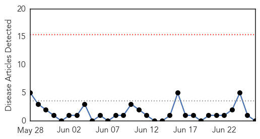

Ebola
30-Day Web Trend
12 alerts, 0 warnings

30-Day Twitter Trend
4 alerts, 0 warnings

Article Locations

Article Confidences

Top Articles:
- 1.000
- The deadliest Ebola outbreak in history is happening right now
- 1.000
- Ebola challenges West African countries as WHO ramps up response
- 1.000
- WHO On Ebola Viral Disease
- 1.000
- OFWs from Sierra Leone choose to come home after Ebola tagged 'out of control'
- 1.000
- WHO: Ebola Sub-regional Crisis
- 1.000
- Fighting Ebola and its myths
- 1.000
- Africa's deadly Ebola outbreak is turning into cross-border crisis
- 1.000
- Could The Ebola Outbreak Spread To Europe Or The U.S.?
- 1.000
- WHO responds to spread of Ebola in West Africa
- 1.000
- Ebola epidemic is ‘out of control’
- 0.999
- Drastic action needed to halt world's worst Ebola outbreak
- 0.999
- Ebola crisis in west Africa: WHO calls for drastic action
- 0.999
- Ebola out of control
- 0.999
- Ebola virus outbreak: 'Drastic action is needed'
- 0.998
- 46 killed by Deadly Ebola Virus
- 0.998
- Ebola kills 46 in Sierra Leone
- 0.997
- Medics Vent Anger at Government Inaction over Ebola — Naharnet
- 0.997
- Medics vent anger at government inaction over Ebola
- 0.997
- WHO reduces Ebola death toll in Sierra Leone
- 0.996
- WHO: Drastic Action Needed to Halt World’s Worst Ebola Outbreak
- 0.994
- WHO calls urgent 11-nation meeting on Ebola
- 0.992
- 26 June 2014: West Africa - Ebola Virus Disease (EVD) Outbreak - Guinea
- 0.992
- Guinea: Medics vent anger at government inaction over Ebola
- 0.991
- Corgenix, Research Group Announce NIH Grant to Advance Work on Ebola Rapid Diagnostic Test Kit
- 0.990
- Expanding Ebola toll and reach prompts high-level meeting
- 0.990
- Exams cancelled amid Ebola crisis - Sierra Leone
- 0.987
- Ebola outbreak in Sierra Leona, 26 June 2014 - Sierra Leone
- 0.985
- Ebola and ethics: Is animal welfare killing wild apes?
- 0.961
- Listen: This Doctor Tried To Save A Boy With The Ebola Virus
- 0.958
- Second Surge Of Ebola Strikes West Africa
- 0.929
- Broomfield's Corgenix receives $2.9M grant to develop Ebola test
Top Tweets:
-
No tweets found for Jun 26, 2014
Hepatitis
30-Day Web Trend
0 alerts, 0 warnings

30-Day Twitter Trend
0 alerts, 0 warnings

Article Locations

Article Confidences

Top Articles:
-
No articles found for Jun 26, 2014
Top Tweets:
-
No tweets found for Jun 26, 2014